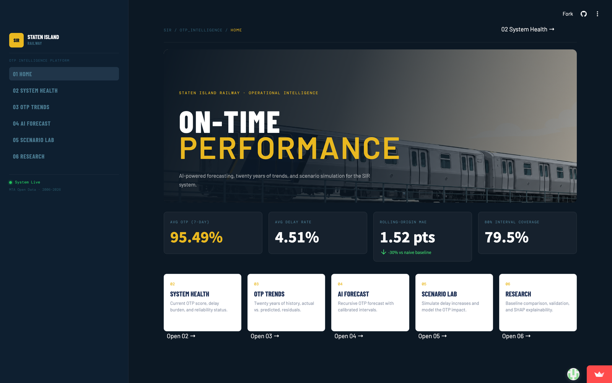
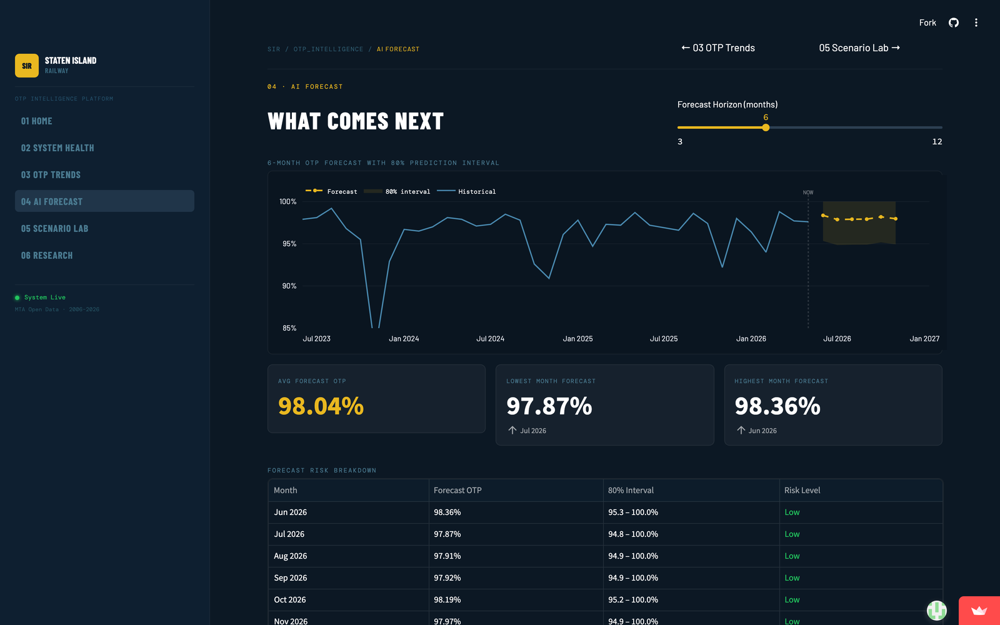

Machine Learning · Transit Analytics
An end-to-end, explainable forecasting system for Staten Island Railway on-time performance, built on 20 years of MTA Open Data. It validates its own model ranking with a rolling-origin evaluation — and finds a more honest answer than a single hold-out first suggested.
Most transit reporting looks backward: it tells you what on-time performance was. This project asks what OTP will be, why the model thinks so, and how confident it should be.
Built entirely on MTA Open Data for the Staten Island Railway, the project runs through a multi-notebook pipeline: historical trend analysis, machine-learning prediction, recursive multi-month forecasting, SHAP-based explainability, and operational risk scoring. XGBoost is benchmarked against naive, moving-average, SARIMA, and Prophet baselines, residual-based prediction intervals give each forecast an error range, and a live six-page Streamlit dashboard, styled for an executive audience, delivers the results.
The most interesting result is about evaluation, not the model. An initial six-month hold-out showed XGBoost beating the field by 18.7% — until five more months of data arrived and that lead evaporated. Re-run as a rolling-origin evaluation across 119 one-step-ahead forecasts, XGBoost, SARIMA, and Prophet come out statistically tied, each around 1.37–1.52 MAE and all roughly 30% better than the naive and moving-average baselines. No single sophisticated model dominates; the honest takeaway is that a short hold-out can rank models the way a longer one won't, which is exactly why rolling-origin validation matters.
It connects directly to my day job in transit operations analytics: turning raw reliability data into forward-looking, decision-ready insight — and reporting it honestly.
Highlights
Home, System Health, OTP Trends, AI Forecast, Scenario Lab, and Research pages give leadership the state of the railway at a glance.
Across 119 one-step-ahead forecasts, XGBoost, SARIMA, and Prophet land in a statistical tie (~1.37–1.52 MAE), all about 30% better than naive and moving-average baselines.
A multi-month forecasting engine feeds each prediction back as a lag feature, projecting OTP 3–12 months ahead.
Residual-based prediction intervals achieve 79.5% and 89.7% actual coverage against 80% and 90% targets, so each forecast carries a calibrated error range.
Forecasted months are classified Low / Medium / High risk (≥95%, 90–95%, <90% OTP) with a plain-language outlook message.
SHAP values reveal the drivers behind each prediction such as seasonality, delay rate, recent OTP momentum, and rolling trends.
The dashboard
A six-page Streamlit app — Home, System Health, OTP Trends, AI Forecast, Scenario Lab, and Research — deployed and running on Streamlit Community Cloud.

Home — executive KPIs on 20 years of MTA Open Data, with the rolling-origin MAE and interval coverage surfaced up front.

AI Forecast — recursive multi-month projection with an 80% prediction interval and Low / Medium / High risk scoring per month.
Approach
Ingest Staten Island Railway OTP data from the MTA Open Data portal and audit quality and coverage.
Standardize the series, then explore seasonality, delay patterns, and long-run reliability trends.
Build time-series features: OTP and delayed-train lags, rolling averages, delay rate, year, month, quarter, season, and day-time category.
Benchmark Linear Regression, Random Forest, and XGBoost against SARIMA, Prophet, and simple baselines. XGBoost is carried forward as the ML forecaster — with the caveat, established later, that it does not statistically beat SARIMA or Prophet once evaluation is done properly.
Apply SHAP to the final model so every forecast can answer not just “what?” but “why?”.
Project OTP 3–12 months ahead by feeding each prediction back as a lag feature, with Low / Medium / High risk scoring.
Re-evaluate every model with a rolling-origin protocol — 119 one-step-ahead forecasts plus expanding-window cross-validation — which overturns the short hold-out and shows XGBoost, SARIMA, and Prophet statistically tied.
Add residual-based prediction intervals, lock the pipeline behind a pytest suite with GitHub Actions CI, and ship everything as a deployed six-page Streamlit dashboard.
Results
Mean absolute error across 119 rolling one-step-ahead forecasts — the evaluation that survives when more data arrives.
| Model | Rolling-origin MAE | Verdict |
|---|---|---|
| SARIMA | 1.37 | Statistical tie ✓ |
| Prophet | 1.49 | Statistical tie ✓ |
| XGBoost | 1.52 | Statistical tie ✓ |
| Naive Baseline | 2.18 | ~30% worse |
| 3-Month Moving Average | 2.27 | ~30% worse |
A single six-month hold-out first ranked XGBoost 18.7% ahead; five more months of data erased that lead. Under rolling-origin evaluation the three sophisticated models are statistically indistinguishable, and all clearly beat the naive and moving-average baselines. Across five expanding-window cross-validation folds (2010–2026) MAE averaged 2.11 ± 0.59, and residual-based prediction intervals reached 79.5% and 89.7% coverage against 80% and 90% targets.
At a glance
Explore the deployed dashboard, or read the complete code, notebooks, and documentation on GitHub.